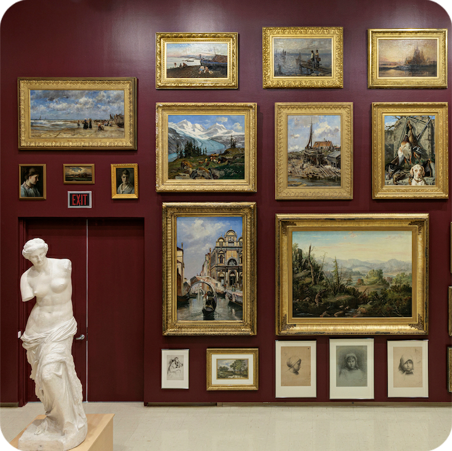
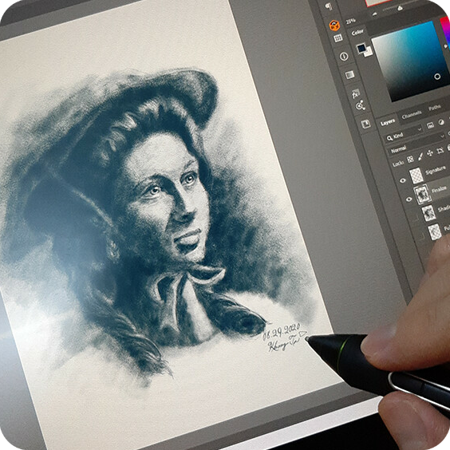
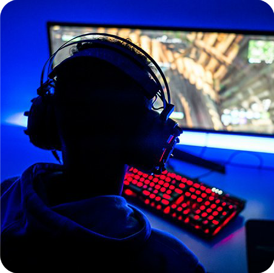
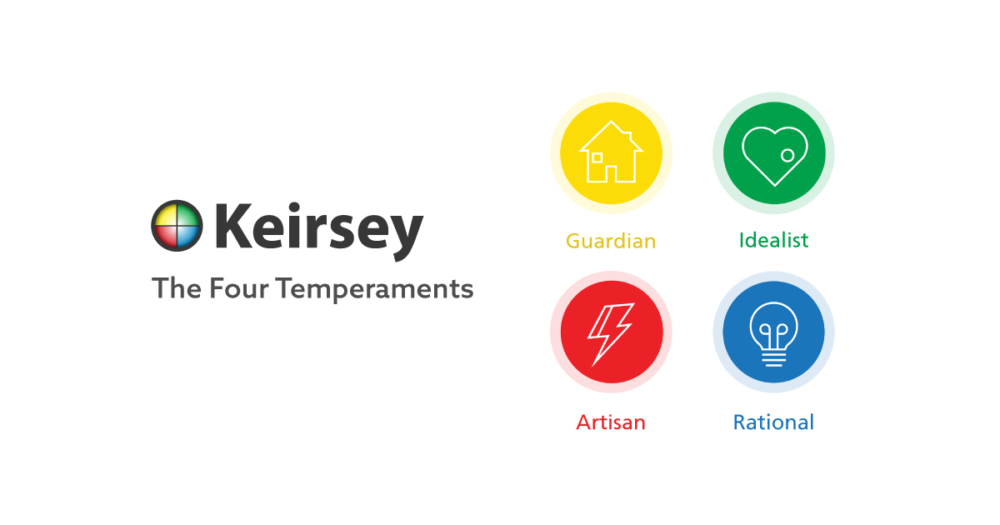
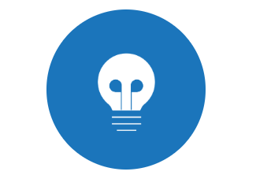

|
|
HOME | PROFESSIONAL PAGE | PERSONALITY | PERSONAL DEVELOPMENT | STORYBOARD | REFERENCES |
Surround yourself with people that will help you, that will listen to you, that got your best interest.
Whateveer you wanna do in life, find soemthing you dont mind doing for the rest of your life,
find something that you like and even if it seems that it is impossible it is very very possible.
So dont get nervous, if you have a big goal chip a way at it until you get where you need to be.
-Juice Wrld.
| CROWDS |
 LOUD NOISES |
 READING |
|---|
|  ART |
 CLOUD GAZING |
LISTENING MUSIC |
|---|
|  DRAWING |
 GAMING |
 SURFING THE INTERNET |
|---|
 |
 |
 |
|---|
The representation from my likes and dislikes ties together with my dislikes creating different traits
leading me to be more centered around my hobbies finding peace and joy from being with my own mind to be more creative in what I like to do.
(click keirsey to do test)
|  |

|
|---|
|  |
Rationals are the problem solving temperament, particularly if the problem has to do with the many complex systems that make up the world around us. |
|---|
The keirsey test is accurate in the way it tends to offer you a definition of the person you are depending on the questions asked, which makes it distinct from other tests. I firmly believe that these characteristics make me a rational. I have a tendency to have an insatiable hunger to accomplish my goals. While also being lazy at times this might not be a 100% correct. Often I'm seen as cold and distant, but this is really the absorbed concentration given to whatever problem I'm working on especially if it is something that I enjoy such as gaming.